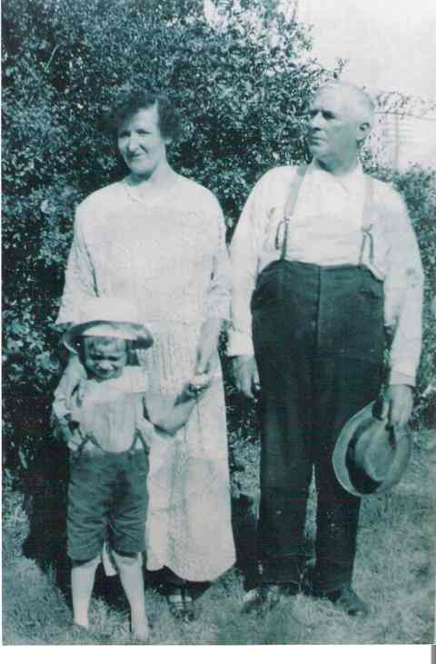

Created using
GRAMPS
Sean Haydon Griffin
's Family Tree
Backward
Forward
Individuals
Bookmarks
Repositories
GEDCOM
Contact Me
Help
Mitchell, Ernest Samuel
Birth Name
Mitchell, Ernest Samuel
Gender
male
Events
Birth
Ernest Samuel Mitchell
, 21 November 1873 at
Ballarat, Victoria, Australia
Residence
Ernest Samuel Mitchell
, before 6 July 1898 at
Ballarat, Victoria, Australia
Occupation
Blacksmtih
, before 6 July 1898
Marriage
Ernest Samuel and Margaret (Maggie) Helena Mitchell
, 6 July 1898 at
St. Patricks Cathedral, Cnr Sturt Street and Dawson Street, Ballarat, Victoria, Australia
Occupation
blacksmith, before 1903
Electoral Enrolment
Ernest Samuel Mitchell, 1903 at
High Street, Ballarat, Victoria, Australia
Occupation
blacksmith, before 1909
Electoral Enrolment
Ernest Samuel Mitchell, 1909 at
44 Droop Street, Footscray, Victoria, Australia
Occupation
blacksmith, before 1914
Electoral Enrolment
Ernest Samuel Mitchell, 1914 at
44 Droop Street, Footscray, Victoria, Australia
Occupation
blacksmith, before 1919
Electoral Enrolment
Ernest Samuel Mitchell, 1919 at
44 Droop Street, Footscray, Victoria, Australia
Occupation
blacksmith, before 1924
Electoral Enrolment
Ernest Samuel Mitchell, 1924 at
52 Droop Street (house name Veronica), Footscray, Victoria, Australia
Residence
Ernest Samuel Mitchell, before 2 November 1928 at
52 Droop Street (house name Veronica), Footscray, Victoria, Australia
Occupation
Blacksmith, before 2 November 1928
Death
Ernest Samuel Mitchell
, 2 November 1928 at
East Melbourne, Victoria, Australia
Burial
Ernest Samuel Mitchell, 10 November 1928 at
Footscray Cemetery, 511 Geelong Rd, Footscray West, Victoria, Australia
Map
Parents
Father
Mitchell, John
Mother
Murdock, Margaret
Families
Married
Wife
Hehir, Margaret (Maggie) Helena
Marriage
Ernest Samuel and Margaret (Maggie) Helena Mitchell
, 6 July 1898 at
St. Patricks Cathedral, Cnr Sturt Street and Dawson Street, Ballarat, Victoria, Australia
Children
Mitchell, Veronica (Vera) Marion
Mitchell, Dulce (Dulcie) Lilian
Mitchell, Olga Bailey
Mitchell, Monica (Mony) Elsie
Mitchell, Leila Venice
Mitchell, Eunice Enid
Gallery

Margarent and Ernest Mitchell and Ernest Meaney small
Ancestors
Mitchell, Ernest Samuel
Mitchell, John
Murdock, Margaret